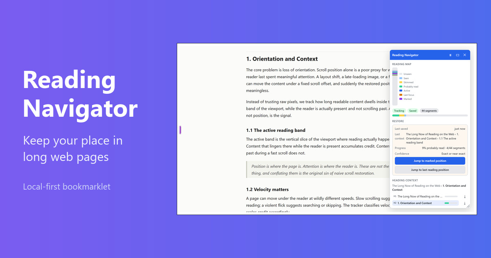

Keep your place in long web pages
A local-first bookmarklet for long articles and documentation. It tracks approximate reading progress, shows heading context, and helps you jump back to your last meaningful reading position.
To install Reading Navigator, drag the button above into your bookmarks bar.
If the bookmarks bar is hidden, press Ctrl+Shift+B to show it. On Mac, press Command+Shift+B. In Safari, choose View > Show Favorites Bar.

What it does
Reading Navigator scans the readable part of a page, shows where you are in the heading outline, and tracks how long content lingers in your active reading area. It stores a local restore point for the current page so you can pick up where you left off after a reload or a break.
- Heading context and click-to-jump navigation.
- Approximate reading progress based on focused dwell time, not raw scroll position.
- Segment states: unseen, seen, skimmed, probably read, active, last focus, and manual marks.
- A generic Jump to last reading position action, with a brief highlight.
- A minimap of your progress and a compact mode for quieter reading.
Local-first and private
Everything stays in your browser. Progress is saved in localStorage for
the current page only. Reading Navigator never stores full page text, HTML, or
screenshots, and it never sends reading data to any server. You can clear the saved
progress for a page at any time from the panel.
Install source
The install links are generated from the bundled distribution exposed by
dist/reading-navigator.bundle.js. Nothing here is hand-copied.
Show generated hosted-loader bookmarklet
Generated size: Loading…
Loading…
Show generated inline bookmarklet
Generated size: Loading…
Loading…